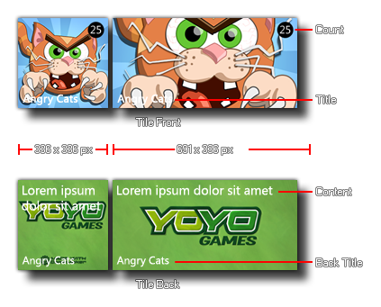
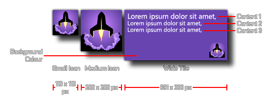
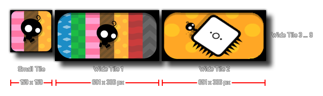

IMPORTANT! The following pages are for the functions specific to Windows Phone 8. Be aware this platform is now deprecated in favour of UWP, so these pages are only intended as a reference resource for legacy projects.
While the Windows 8 Phone OS looks very similar to the standard
Windows 8 desktop version, the live tiles and other functions are a
bit more limited. At the moment GameMaker: Studio permits
you to use special functions to modify the Live Tiles associated
with your game, as well as one further function to check your game
for Trial Play:
The tile functions are split into three groups (for the three different types of tiles that are available) and apart from the functions specific to the tile type, there are also two that are available for all types:
NOTE: As with other mobile target platforms, the Back
Button on Windows Phone devices can be accessed using the
vk_backspace keyboard check.
 A Flip Tile
is one that has a back and a front image and the tile switches (or
"flips") between them over time.
The following functions are available to help you control their
visual aspects:
 The Iconic
Tile is one that uses an "iconic" image in all formats. This
image will occupy the whole tile for a small and medium tile, but
will be reduced to a small icon over the chosen background colour
for the wide tile (normally with some text associated with the tile
two).
The following functions can be used to set these properties:
 The Cyclic
Tile is one that uses a number of wide-tile format images and
cycles between them. If the Live Tile is not a wide tile,
then only a small image will be shown.
The following functions can be used to set these properties: